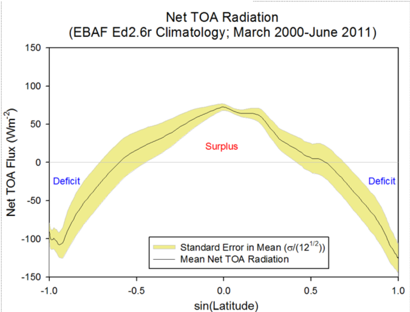

import numpy as np
import matplotlib.pyplot as plt
from scipy.linalg import lu_factor, lu_solve
from scipy.integrate import solve_ivp
%matplotlib inline
plt.rcParams.update({'font.size': 11, 'figure.dpi': 110,
'axes.spines.top': False, 'axes.spines.right': False})
SECONDS_PER_YEAR = 365.25 * 86400
R_EARTH = 6.371e6
RHO_CP = 1000.0 * 4180.0 # water density times specific heat: J/m³/K
# Ninety 2-degree latitude bands, from the South Pole to the North Pole.
phi_edges = np.linspace(-np.pi/2, np.pi/2, 91)
phi = 0.5 * (phi_edges[:-1] + phi_edges[1:])
lat, lat_edges = np.rad2deg(phi), np.rad2deg(phi_edges)
band_area = 2*np.pi*R_EARTH**2 * np.diff(np.sin(phi_edges))
weights = band_area / band_area.sum()
def global_mean(values):
'''Area-weighted mean along the last (latitude) dimension.'''
return np.asarray(values) @ weights
def annual_sunlight(phi, solar_constant=1361.0, tilt_deg=23.44):
'''Daily solar geometry averaged over a circular orbit (720 phases).'''
longitude = 2*np.pi*(np.arange(720) + 0.5)/720
delta = np.arcsin(np.sin(np.deg2rad(tilt_deg))*np.sin(longitude))
p = np.asarray(phi)[:, None]
sunset = np.arccos(np.clip(-np.tan(p)*np.tan(delta), -1, 1))
daily = solar_constant/np.pi * (
sunset*np.sin(p)*np.sin(delta)
+ np.cos(p)*np.cos(delta)*np.sin(sunset))
return np.maximum(daily, 0).mean(axis=1)
Q = annual_sunlight(phi)
FIGURES = {}
fig, ax = plt.subplots(figsize=(7, 4), layout='constrained')
ax.plot(lat, Q, color='#777777', lw=2)
ax.set(xlabel='Latitude (°)', ylabel='Annual mean incoming Q (W/m²)', xlim=(-90, 90))
FIGURES['incoming_sunlight'] = fig
plt.show()
print(f'Global mean incoming sunlight: {global_mean(Q):.2f} W/m²')A climate model across latitude
Week 6: predict a climate, test it, then add processes
Start with the EBM from earlier lectures. Give each latitude its own annual mean sunlight, retaining constant albedo 0.30, atmospheric emissivity 0.779, and no horizontal transport. Integrate forward to obtain a temperature profile, then compare its temperature and TOA budgets with Earth.
First use Stefan–Boltzmann radiation with temperatures in kelvin. Add horizontal transport while keeping that radiation law and albedo unchanged. Later introduce prescribed latitude-dependent albedo and linear OLR as separate modeling choices.
All code is supplied. Predict, run, and explain. Each band has the same heat capacity per area, corresponding to a 10 m water layer. We omit seasonal forcing, evolving ice, and a separate CO₂ perturbation. References appear at the end.
1. Our earlier EBM at every latitude
\(Q(\phi)\) is incoming sunlight per unit area, averaged over day and year. More oblique sunlight spreads over a larger area at high latitudes. Day length and seasonal solar angle also matter. The helper uses a circular orbit, tilt 23.44°, and \(S_0=1361\) W m⁻², consistent with the earlier global model.
The supplied setup prepares helpers for later experiments. First inspect Q and use the earlier radiation law below.
Independent bands with the earlier greenhouse model
With \(a_0=0.30\), each band absorbs \((1-a_0)Q(\phi)\). Recall that \(\epsilon=0.779\) is the atmospheric layer’s longwave absorptivity/emissivity. With a rapidly adjusting atmosphere, \(T_a^4=T_s^4/2\), giving
\[\mathrm{OLR}=(1-\epsilon/2)\sigma T_s^4,\] \[C\frac{dT_s}{dt}=(1-a_0)Q(\phi)-(1-\epsilon/2)\sigma T_s^4.\]
This retains the earlier greenhouse effect. \(\sigma=5.670374419\times10^{-8}\) W m⁻² K⁻⁴ and \(T_s\) is in kelvin. Start every band at 288 K and integrate forward.
Predict: Does the globally calibrated emissivity necessarily reproduce Earth’s latitude profile? What must local net TOA radiation N be at equilibrium without another energy exchange?
SIGMA = 5.670374419e-8
EPSILON = 0.779
def gray_olr(T_K, epsilon=EPSILON):
return (1 - epsilon/2)*SIGMA*np.asarray(T_K)**4
def simulate_gray(D=0.0, albedo_value=0.30, epsilon=EPSILON,
years=30.0, water_depth=10.0, initial_K=288.0):
C = RHO_CP*water_depth
reflect = np.broadcast_to(np.asarray(albedo_value, dtype=float), lat.shape)
if not (0 <= epsilon <= 1 and np.all((reflect >= 0) & (reflect <= 1))):
raise ValueError('Emissivity and albedo must lie between 0 and 1.')
if D < 0 or min(years, water_depth, initial_K) <= 0:
raise ValueError('Use nonnegative D and positive time, depth and temperature.')
absorbed = (1-reflect)*Q
def rhs(t, T_K):
h = np.zeros_like(T_K) if D == 0 else transport(T_K, D)[1]
return SECONDS_PER_YEAR/C*(absorbed-gray_olr(T_K, epsilon)+h)
time = np.linspace(0, years, 301)
solution = solve_ivp(rhs, (0, years), np.full(len(lat), initial_K),
t_eval=time, method='BDF', rtol=1e-9, atol=1e-10)
if not solution.success:
raise RuntimeError(solution.message)
return dict(time=time, T_K=solution.y.T, T=solution.y.T-273.15,
D=D, C=C, ASR=absorbed, epsilon=epsilon)
gray_no_transport = simulate_gray()
fig, axes = plt.subplots(1, 2, figsize=(11, 4.2), layout='constrained')
for target in [0, 0.3, 1, 30]:
i = np.argmin(np.abs(gray_no_transport['time']-target))
axes[0].plot(lat, gray_no_transport['T'][i], lw=2,
label=f"{gray_no_transport['time'][i]:g} yr")
axes[0].set(xlabel='Latitude (°)', ylabel='Surface temperature (°C)', xlim=(-90, 90))
axes[0].legend()
N_gray = gray_no_transport['ASR']-gray_olr(gray_no_transport['T_K'][-1])
axes[1].plot(lat, N_gray, color='#555555', lw=2)
axes[1].set(xlabel='Latitude (°)', ylabel='Final net TOA radiation N (W/m²)',
xlim=(-90, 90), ylim=(-10, 10))
axes[1].axhline(0, color='black', lw=0.7)
FIGURES['gray_no_transport'] = fig
plt.show()
print(f'Maximum final |N|: {np.max(np.abs(N_gray)):.2e} W/m²')
print(f'Final mean surface temperature: {global_mean(gray_no_transport["T"][-1]):.2f} °C')2. Test the first prediction against Earth
Compare with annual mean surface skin temperature from NCEP–NCAR reanalysis (1981–2010). Load NOAA’s public monthly NetCDF files, average over longitude, and then average the months using their calendar lengths. These are reanalysis estimates, rather than direct observations of a single year. Native latitudes exclude the exact poles.
The supplied data/ncep folder contains the original temperature file, so class can run offline. If it is missing, the cell downloads it from NOAA and keeps a local copy. Xarray and netCDF4 are required in addition to the modeling packages. The temperature file is about 0.7 MB.
Inspect: What does the independent-band model capture? Where does its symmetric profile miss Earth’s structure? Does fitting a global mean validate regional predictions?
from pathlib import Path
from urllib.request import urlopen
import xarray as xr
# Keep the public NOAA temperature file locally for offline classes.
DATA_DIR = Path('data/ncep')
DATA_DIR.mkdir(parents=True, exist_ok=True)
NOAA_BASE = 'https://downloads.psl.noaa.gov/Datasets/ncep.reanalysis.derived/'
NCEP_FILES = {
'temperature_C': ('surface_gauss/skt.sfc.mon.1981-2010.ltm.nc', 'skt'),
}
def cached_ncep_file(relative_url):
local = DATA_DIR / Path(relative_url).name
if not local.exists():
temporary = local.with_suffix('.nc.part')
try:
with urlopen(NOAA_BASE + relative_url, timeout=45) as response:
temporary.write_bytes(response.read())
# Check that the download is readable before adding it to the cache.
with xr.open_dataset(temporary, engine='netcdf4', decode_times=False):
pass
temporary.replace(local)
except Exception as error:
temporary.unlink(missing_ok=True)
raise RuntimeError(
f'Could not load {local.name}. Connect to the internet once, '
'or copy the supplied data/ncep folder beside this notebook.'
) from error
return local
ncep_fields = {}
for name, (relative_url, variable) in NCEP_FILES.items():
with xr.open_dataset(cached_ncep_file(relative_url),
engine='netcdf4', decode_times=False) as source:
# Dates are climatological months, not a time series of individual years.
# Label the January--December axis explicitly. Temperatures are in °C.
field = source[variable].astype('float64').rename(time='month')
field = field.assign_coords(month=np.arange(1, 13))
ncep_fields[name] = field.load()
ncep_monthly = xr.merge(
[field.to_dataset(name=name) for name, field in ncep_fields.items()],
join='exact')
month_days = xr.DataArray(
[31, 28 + 7/30, 31, 30, 31, 30, 31, 31, 30, 31, 30, 31],
dims='month', coords={'month': np.arange(1, 13)})
# Zonal mean first, then an annual mean weighted by calendar month length.
# February includes the seven leap years in the 1981--2010 period.
ncep_annual = (ncep_monthly.mean('lon').weighted(month_days)
.mean('month').sortby('lat'))
OBS_LAT = ncep_annual.lat.values
OBS_T_C = ncep_annual.temperature_C.values
print('Loaded temperature: 12 climatological months × 94 latitudes × 192 longitudes.')
print('Period: 1981–2010. The original NetCDF file is cached locally.')fig, ax = plt.subplots(figsize=(7.6, 4.5), layout='constrained')
ax.plot(lat, gray_no_transport['T'][-1], color='#c54b26', lw=2,
label='Independent bands: earlier EBM')
ax.plot(OBS_LAT, OBS_T_C, color='#2374a5', lw=2, label='NCEP reanalysis: 1981–2010')
ax.set(xlabel='Latitude (°)', ylabel='Surface skin temperature (°C)', xlim=(-90, 90))
ax.legend(fontsize=9)
FIGURES['gray_temperature_comparison'] = fig
plt.show()A sharper test: the regional TOA radiation budget

CERES satellite-based radiation budget: March 2000–June 2011. The horizontal axis is \(\sin\phi\), so the equator is 0 and the poles are −1 and +1. Net downward radiation is \(N=\mathrm{ASR}-\mathrm{OLR}\).
Isolated equilibrium bands require N=0 everywhere. The CERES climatology shows tropical radiative surpluses and higher-latitude deficits. For approximately steady regional temperatures, these require exported and imported energy. Storage can also be nonzero, so exact local equilibrium is an idealization.
Inspect: Where does radiation supply energy, and where does it remove energy? Can independent equilibrium bands reproduce this pattern by changing emissivity alone?
The temperature and radiation products cover different periods. We use them to test broad climate structure, without combining them into one contemporaneous closed energy budget.
Your explanation:
3. Add horizontal transport
Let \(H(\phi)\) be the total rate of heat transfer across the entire latitude circle at \(\phi\), representing transport by the atmosphere and ocean together. A rate of energy transfer is called power: its units are watts, with 1 W = 1 joule per second. We often express this large heat-transfer rate in petawatts: 1 PW = \(10^{15}\) W.
We choose northward heat transfer as positive:
- \(H>0\): net heat transfer northward.
- \(H<0\): net heat transfer southward.
For example, \(H=+1\) PW at 30°N means \(10^{15}\) joules cross that latitude circle northward each second. At 30°S, \(H=-1\) PW means the same rate southward. Both examples describe poleward heat transport.
At an internal boundary, we approximate transport down the temperature gradient using adjacent band temperatures:
\[H_{edge}=-2\pi R^2\cos\phi_{edge}\,D\, \frac{T_{north}-T_{south}}{\phi_{north}-\phi_{south}}.\]
Angles in this calculation are in radians. \(D\geq0\) controls transport strength, in W m⁻² K⁻¹. These units incorporate the spherical scaling in our transport rule. They differ from the m² s⁻¹ units of a molecular diffusivity. For \(D=0\), transport vanishes.
For each band:
\[h_i=\frac{H_{south}-H_{north}}{\mathrm{area}_i}.\]
\(H\) is the total heat-transfer rate in W; \(h\) is the resulting local heating per unit area, in W m⁻². The sign of \(H\) tells us the transfer direction. A band gains energy from transport when more heat enters than leaves, giving \(h>0\).
We impose zero heat transfer across the two poles. Heat crossing an internal boundary leaves one band and enters its neighbor, so internal transport conserves energy. The bands have different areas; all global means use their actual areas.
def transport(T, D=0.6):
'''Return northward boundary power H (W) and band heating h (W/m²).'''
T = np.asarray(T, dtype=float)
H = np.zeros(len(T) + 1) # polar boundary powers remain zero
gradient = np.diff(T) / np.diff(phi)
H[1:-1] = -2*np.pi*R_EARTH**2 * np.cos(phi_edges[1:-1])*D*gradient
h = (H[:-1] - H[1:]) / band_area
return H, h
# Matrix form of the same conservative exchange rule, for time stepping.
L = np.zeros((len(lat), len(lat)))
for edge in range(1, len(lat)):
south, north = edge - 1, edge
conductance = 2*np.pi*R_EARTH**2*np.cos(phi_edges[edge])/(phi[north]-phi[south])
L[south, south] -= conductance/band_area[south]
L[south, north] += conductance/band_area[south]
L[north, south] += conductance/band_area[north]
L[north, north] -= conductance/band_area[north]Keep albedo 0.30, emissivity 0.779, and the same Stefan–Boltzmann-based OLR. Change only D from 0 to 0.6 W m⁻² K⁻¹.
Predict: How will temperature and local N change? Must the global mean temperature remain exactly unchanged with nonlinear radiation?
gray_with_transport = simulate_gray(D=0.6)
T_gray = gray_with_transport['T_K'][-1]
H_gray, h_gray = transport(T_gray, 0.6)
N_gray_transport = gray_with_transport['ASR']-gray_olr(T_gray)
fig, axes = plt.subplots(1, 2, figsize=(11.5, 4.3), layout='constrained')
axes[0].plot(lat, gray_no_transport['T'][-1], label='D = 0', color='#c54b26', lw=2)
axes[0].plot(lat, gray_with_transport['T'][-1], label='D = 0.6', color='#7b4397', lw=2)
axes[0].plot(OBS_LAT, OBS_T_C, label='NCEP reanalysis', color='#2374a5', lw=2)
axes[0].set(xlabel='Latitude (°)', ylabel='Surface temperature (°C)', xlim=(-90, 90))
axes[0].legend(fontsize=9)
axes[1].plot(lat, N_gray_transport, label='Net radiation N', color='#c54b26', lw=2)
axes[1].plot(lat, h_gray, label='Convergence heating h', color='#2374a5', lw=2)
axes[1].plot(lat, N_gray_transport+h_gray, label='Storage N + h', color='#555555', ls='--')
axes[1].set(xlabel='Latitude (°)', ylabel='Energy flux (W/m²)', xlim=(-90, 90))
axes[1].legend(fontsize=9)
FIGURES['gray_with_transport'] = fig
plt.show()
print(f'Maximum local storage rate: {np.max(np.abs(N_gray_transport+h_gray)):.2e} W/m²')
print(f'Global means, D=0 / D=0.6: {global_mean(gray_no_transport["T"][-1]):.3f} / {global_mean(gray_with_transport["T"][-1]):.3f} °C')Your explanation:
4. Refine the prescribed radiation
We now prescribe latitude-dependent albedo and use empirical linear OLR. These are additional modeling choices. The earlier gray law already included the atmosphere, and transport does not require the linear law.
Absorbed sunlight: \(\mathrm{ASR}(\phi)=[1-\mathcal A(\phi)]Q(\phi)\).
\(Q\) is annual-mean incoming sunlight at the top of the atmosphere. It is averaged over day and year. The supplied solar calculation averages a tilted, circular-orbit planet over a year, using \(S_0=1361.0\) W m⁻² and tilt 23.44°. This is an explicit orbital simplification, not an observed climatology.
Our prescribed planetary albedo is \[\mathcal A(\phi)=0.229+0.375\sin^2\phi.\] Planetary albedo can be inferred from annual mean incoming and absorbed TOA radiation as 1 − ASR/Q. Our smooth profile approximates the broad latitude dependence of the NCEP-based curve shown in class. Snow and ice, clouds, and the angle of incoming sunlight affect reflection. The prescribed curve is about 0.23 at the equator and 0.60 at the poles, and stays fixed as temperature changes. It represents the column’s effective reflection, including atmospheric and surface effects.
Outgoing infrared: \(\mathrm{OLR}=A+BT\), with \(A=210\) W m⁻² and \(B=2\) W m⁻² K⁻¹, using \(T\) in °C. The Stefan–Boltzmann law still governs thermal emission. Its temperature is the emitting temperature in kelvin, which differs from surface temperature for an atmosphere–surface column. Here the linear law approximates the relation between surface T and radiation escaping to space after atmospheric absorption and emission. A 1°C warming increases OLR by 2 W m⁻². With fixed ASR, the corresponding local net radiative feedback is \(-B\). This is a prescribed spatial radiation law, not an estimate of the global feedback from a Gregory regression.
Local heating from transport convergence: \(H\) is the total rate of heat transfer across a latitude circle by the atmosphere and ocean, in W (joules per second), often expressed in PW (\(10^{15}\) W). We choose northward transfer as positive. Calculate \(H\) at band boundaries from the temperature gradient, then calculate \(h=(H_{south}-H_{north})/\text{band area}\). Heating \(h\) uses W m⁻². Positive \(h\) adds energy to the band.
A, B = 210.0, 2.0
albedo = 0.229 + 0.375*np.sin(phi)**2
ASR = (1 - albedo)*Q
def olr(T):
return A + B*np.asarray(T)
fig, axes = plt.subplots(1, 2, figsize=(11, 4), layout='constrained')
axes[0].plot(lat, Q, label='Incoming sunlight Q', color='#777777', lw=2)
axes[0].plot(lat, ASR, label='Absorbed sunlight ASR', color='#c54b26', lw=2)
axes[0].set(xlabel='Latitude (°)', ylabel='Solar flux (W/m²)', xlim=(-90, 90))
axes[0].legend()
axes[1].plot(lat, albedo, color='#2374a5', lw=2)
axes[1].set(xlabel='Latitude (°)', ylabel='Prescribed planetary albedo',
xlim=(-90, 90), ylim=(0, 0.7))
FIGURES['inputs'] = fig
plt.show()
print(f'Area-weighted incoming sunlight: {global_mean(Q):.2f} W/m²')
print(f'Area-weighted absorbed sunlight: {global_mean(ASR):.2f} W/m²')Predict and explain: Why is the equator-to-pole difference in ASR stronger than the difference in incoming sunlight alone? Would ASR change if we warmed every band by 2°C in this model? What would happen to OLR?
Your explanation:
Supplied time stepping
The next function advances all band temperatures forward through time. At each step it combines radiation and transport, then updates heat storage. It uses an implicit step, solving the coupled temperatures together; this avoids the extremely small explicit time steps required by diffusion on a fine grid. We use 5-day steps, and check convergence separately.
The settings to change are D, water_depth, and the initial temperature. radiation=False turns both ASR and OLR off, isolating redistribution. You do not need to edit the solver.
def simulate(D=0.6, years=15.0, water_depth=10.0,
initial=10.0, radiation=True, dt_days=5.0):
if not np.all(np.isfinite([D, years, water_depth, dt_days])):
raise ValueError('Use finite parameters.')
if D < 0 or min(years, water_depth, dt_days) <= 0:
raise ValueError('D must be nonnegative; time and depth must be positive.')
C = RHO_CP*water_depth
start = np.broadcast_to(np.asarray(initial, dtype=float), lat.shape).copy()
if not np.all(np.isfinite(start)):
raise ValueError('Initial temperatures must be finite.')
nstep = int(np.ceil(years*365.25/dt_days))
time = np.linspace(0.0, years, nstep + 1)
dt = (time[1]-time[0])*SECONDS_PER_YEAR
operator = D*L - (B*np.eye(len(lat)) if radiation else 0)
source = ASR - A if radiation else np.zeros_like(ASR)
factor = lu_factor(np.eye(len(lat)) - dt/C*operator)
T = np.empty((nstep + 1, len(lat)))
T[0] = start
for n in range(nstep):
T[n+1] = lu_solve(factor, T[n] + dt/C*source)
return dict(time=time, T=T, C=C, D=D, radiation=radiation,
water_depth=water_depth, dt_seconds=dt)
def profiles(ax, run, times):
for target in times:
i = np.argmin(np.abs(run['time']-target))
ax.plot(lat, run['T'][i], label=f"{run['time'][i]:.2g} yr", lw=2)
ax.set(xlabel='Latitude (°)', ylabel='Temperature (°C)', xlim=(-90, 90))
ax.legend(fontsize=9)5. Isolate diffusion (optional)
Start with a smooth warm-equator, cold-pole profile: \[T(\phi,0)=32-60\sin^2\phi\quad[{}^\circ\mathrm C].\]
Turn radiation off. Predict: What happens to the temperature contrast? What happens to global mean temperature? What temperature would remain after a sufficiently long run?
initial_profile = 32.0 - 60.0*np.sin(phi)**2
diffusion_run = simulate(D=0.6, years=3, initial=initial_profile, radiation=False)
fig, ax = plt.subplots(figsize=(7, 4.4), layout='constrained')
profiles(ax, diffusion_run, [0, 1/12, 0.25, 0.5, 1, 3])
ax.set_title('Redistribution alone: no radiation')
FIGURES['diffusion_only'] = fig
plt.show()
means = global_mean(diffusion_run['T'])
print(f'Initial global mean: {means[0]:.4f} °C')
print(f'Final global mean: {means[-1]:.4f} °C')
print(f'Maximum mean change: {np.max(np.abs(means-means[0])):.2e} K')Your explanation:
6. Run the refined EBM
Restore the fixed ASR profile and temperature-dependent OLR. Start every band at 10°C. First run with \(D=0\), then with \(D=0.6\) W m⁻² K⁻¹.
Predict: Without transport, what sets each band’s final temperature? Compared with that solution, how should transport change the tropics and the poles? Does steady temperature require zero heat transport?
no_transport = simulate(D=0.0)
baseline = simulate(D=0.6)
fig, axes = plt.subplots(1, 2, figsize=(11, 4.3), sharey=True, layout='constrained')
for ax, run, title in zip(axes, [no_transport, baseline],
['Radiation alone (D = 0)', 'Radiation and transport (D = 0.6)']):
profiles(ax, run, [0, 0.25, 1, 3, 15])
ax.set_title(title)
FIGURES['adjustment'] = fig
plt.show()Your explanation:
7. Check the local budget
Look at the final budget of the \(D=0.6\) run. The local storage rate is
\[\frac{dE_i}{dt}=C\frac{dT_i}{dt}=\underbrace{\mathrm{ASR}_i-\mathrm{OLR}_i}_{N_i}+h_i.\]
Predict: Which quantities should vanish at equilibrium: \(N\), \(h\), \(N+h\), or \(H\)? For poleward heat transport in both hemispheres, what sign should \(H\) have south and north of the equator?
T_final = baseline['T'][-1]
H, h = transport(T_final, D=baseline['D'])
N = ASR - olr(T_final)
storage = N + h
fig, axes = plt.subplots(1, 2, figsize=(11.5, 4.2), layout='constrained')
axes[0].plot(lat, N, label='Net radiation N = ASR − OLR', color='#c54b26', lw=2)
axes[0].plot(lat, h, label='Transport heating h', color='#2374a5', lw=2)
axes[0].plot(lat, storage, label='Storage rate N + h', color='#555555', ls='--', lw=2)
axes[0].axhline(0, color='black', lw=0.7)
axes[0].set(xlabel='Latitude (°)', ylabel='Energy flux (W/m²)', xlim=(-90, 90))
axes[0].legend(fontsize=9)
axes[1].plot(lat_edges, H/1e15, color='#7b4397', lw=2)
axes[1].axhline(0, color='black', lw=0.7)
axes[1].set(xlabel='Boundary latitude (°)', ylabel='Northward heat transport H (PW)',
xlim=(-90, 90))
FIGURES['budgets'] = fig
plt.show()
print(f'Maximum absolute local storage rate: {np.max(np.abs(storage)):.3e} W/m²')
print(f'Global mean transport heating: {global_mean(h):.3e} W/m²')
print(f'Global mean net radiation: {global_mean(N):.3e} W/m²')Your explanation:
8. Change transport strength
Keep radiation and heat capacity fixed. Predict: As \(D\) increases, what happens to the temperature contrast, maximum poleward power, and global mean temperature?
We report the contrast between the 1°N and 89°N band centers, not an exact point temperature at the equator or pole.
transport_values = [0.0, 0.1, 0.6, 1.2]
runs = {D: no_transport if D == 0 else baseline if D == 0.6 else simulate(D=D)
for D in transport_values}
fig, ax = plt.subplots(figsize=(7.2, 4.4), layout='constrained')
print('D (W/m²/K) mean (°C) contrast (K) max |H| (PW)')
equator_band = len(lat)//2
for D, run in runs.items():
T = run['T'][-1]
H_D, _ = transport(T, D)
ax.plot(lat, T, label=f'D = {D:g}', lw=2)
contrast = T[equator_band] - T[-1]
print(f'{D:10.1f} {global_mean(T):9.3f} {contrast:12.3f} {np.max(np.abs(H_D))/1e15:12.3f}')
ax.set(xlabel='Latitude (°)', ylabel='Final temperature (°C)', xlim=(-90, 90))
ax.legend()
FIGURES['transport_strength'] = fig
plt.show()Your explanation:
9. Your experiment
Change my_D and rerun the cell. Then change only my_depth.
Before running, explain which change should alter the equilibrium profile, and which should mainly alter the adjustment time. The displayed profiles are at the stated times; check the local storage rate before calling a result equilibrium, especially for a deeper layer.
my_D = 0.3 # W/m²/K; try 0, 0.1, 0.6, or 1.2
my_depth = 10.0 # metres; try 50 with D fixed
my_years = 15.0 # extend the run if the storage rate is still large
my_run = simulate(D=my_D, water_depth=my_depth, years=my_years)
fig, ax = plt.subplots(figsize=(7.2, 4.4), layout='constrained')
profiles(ax, my_run, [0, 1, 3, my_years])
ax.set_title(f'D = {my_D:g} W/m²/K, water depth = {my_depth:g} m')
plt.show()
my_T = my_run['T'][-1]
_, my_h = transport(my_T, my_D)
print(f'Maximum final |ASR − OLR + h|: {np.max(np.abs(ASR-olr(my_T)+my_h)):.3e} W/m²')Your explanation:
Sources and modeling choices
- Brian E. J. Rose, Lecture 14: The one-dimensional energy balance model: radiation and diffusion parameterizations, reference coefficients, and experiment sequence. The class slides also reproduce the lecture’s NCEP-based albedo comparison and OLR–surface-temperature figure.
- climlab solar geometry documentation: daily and annual insolation calculations. Our short solar helper specializes the daily geometry to a circular orbit. The orbital values and \(S_0\) are model inputs, not a claim about the latest observed solar irradiance.
The notebook uses NumPy and SciPy directly, so the model runs without climlab. Public data are read from the local cache, with downloads only if a file is missing. It preserves spherical geometry through boundary circumference factors and exact band areas. The code integrates in time to find equilibrium. The initial profile and albedo are written directly with \(\sin^2\phi\).
- NOAA PSL temperature climatology: NCEP–NCAR Reanalysis 1 skin temperature, 1981–2010, already in °C.
Both radiation models use S0=1361 W/m². The gray runs use adaptive BDF integration; the linear runs use backward Euler. In each radiative run equilibrium is obtained by time integration.
- NASA CERES: unchanged net TOA radiation figure, EBAF Ed2.6r, March 2000–June 2011. This is the main radiation-budget comparison. Edition 2.6r documentation describes the global heat-storage constraint.